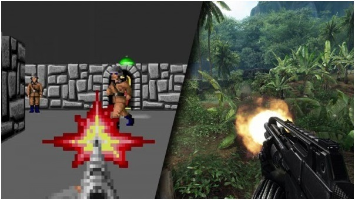

A PC game, also known as a computer game or personal computer game, is a video game played on a personal computer rather than a dedicated video game console or arcade machine. Its defining characteristics include: more diverse and user-determined gaming hardware and software; and generally greater capacity in input, processing, and video output. The uncoordinated nature of the PC game market, and now its lack of physical media, make precisely assessing its size difficult. Home computer games became popular following the video game crash of 1983, leading to the era of the "bedroom coder". In the 1990s, PC games lost mass-market traction to console games, before enjoying a resurgence in the mid-2000s through digital distribution.
Historically gaming computers had several distinct hardware components that set them apart from a typical PC. The push for better graphics began with color fidelity, from display systems such as CGA eventually graduating to VGA, which was adopted for the mass market. Gaming also led the push for the adoption of sound cards, a component that is now commonly integrated onto motherboards. In the 1980s, several non-IBM PC compatible platforms gained a measure of popularity due to advanced graphics and sound capabilities, starting with the Atari 400/800 and the TI 99/4, and then continuing with others such as the Commodore 64 and eventually the Amiga. Video game developers of the time targeted these platforms for their games, though typically they would later port their games to the more common PC and Apple platforms as well. The MSX was also popular in Japan, where it preceded the video game console revolution.[2] Japan also had several other popular gaming computers during the 1980s to early 1990s, including the very popular PC-88 and PC-98 as well as the powerful X68000 and FM Towns.[3]

Pc game graphics evolution, on the left Wolfenstein, on the right Far Cry.
Released in Japan to a subdued reception, the Dreamcast enjoyed a successful U.S. launch backed by a large marketing campaign, but interest in the system steadily declined as Sony built hype for the upcoming PlayStation 2. Sales did not meet Sega's expectations despite several price cuts, and the company continued to incur significant financial losses. After a change in leadership, Sega discontinued the Dreamcast on March 31, 2001, withdrawing from the console business and restructuring itself as a third-party publisher. 9.13 million Dreamcast units were sold worldwide.
Although the Dreamcast had a short lifespan and limited third-party support, reviewers have considered the console ahead of its time. Its library contains many games considered creative and innovative, including Crazy Taxi, Jet Set Radio and Shenmue, as well as high-quality ports from Sega's NAOMI arcade system board. The Dreamcast was also the first console to include a built-in modem for Internet support and online play.